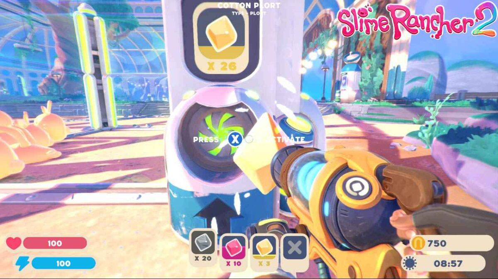
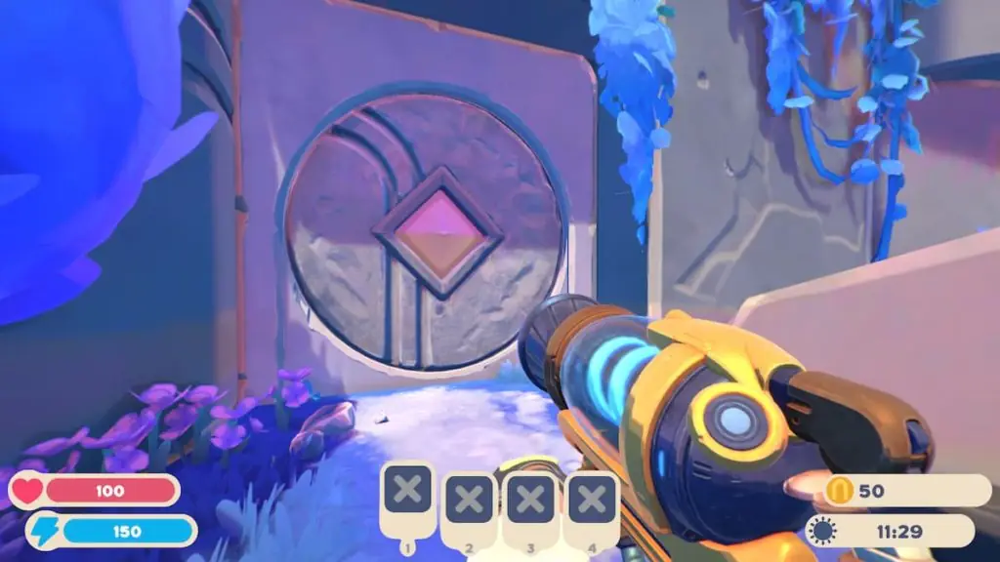

Plorts são um produto de gosmas que eles produzem quando são alimentados com comida , ou ocasionalmente obtidos como recompensa do Range Exchange . Seu principal uso é gerar Newbucks vendendo-os no Mercado Plort . Depois que o laboratório é desbloqueado, eles também podem ser depositados na refinaria para criar dispositivos de ciência de lodo .
Nos modos Aventura e Casual, os valores dos plorts sobem e descem diariamente e os preços sobem à meia-noite; isso é parcialmente influenciado pela frequência com que são vendidos.
|
Como os preços das parcelas mudam diariamente, você deve vender parcelas caras em rajadas, mantendo-as armazenadas em um coletor de automóveis ou em um silo. Tarr são criados quando um largo come um plort diferente do seu. A menos que limpe intencionalmente um curral ou excesso de limo de uma área, é uma má ideia expor largos a parcelas que eles não produzem. |
 |
|  |
Os plots estão envolvidos em alguns quebra-cabeças diferentes encontrados em Far, Far Range; seis plorts diferentes são necessários para abrir o portão para as ruínas antigas , cinco plorts quânticos são necessários para ativar o teletransportador para o deserto de vidro , e cada uma das quatro fontes requer três plorts inseridos em suas estátuas de lodo próximas para ativar. Em Slime Rancher 2, estátuas semelhantes estão espalhadas pelo mapa, que abrem várias portas próximas, fornecendo atalhos ou acesso a cápsulas de tesouro. |